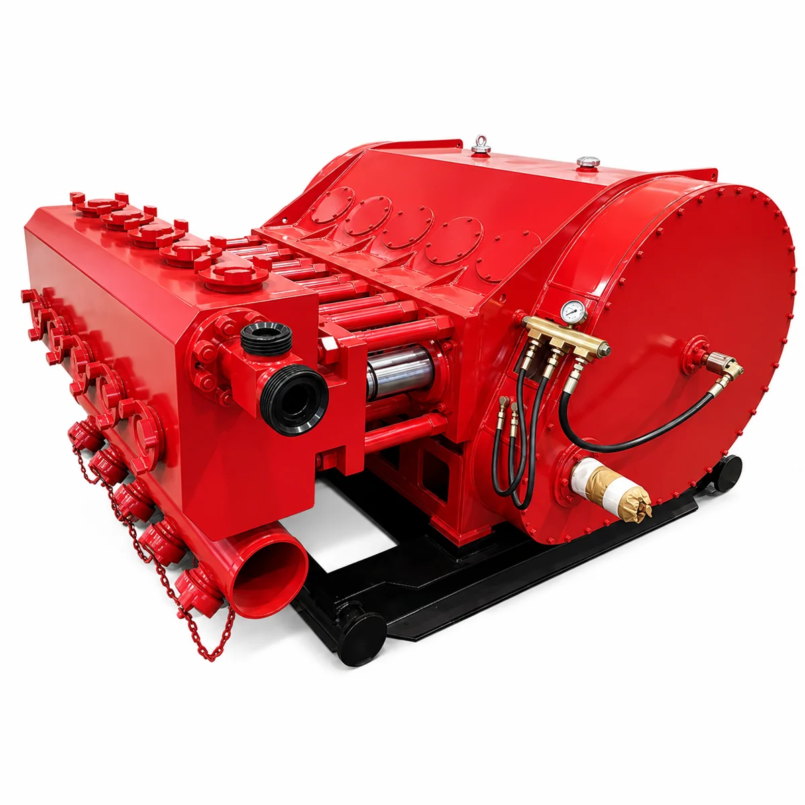

Fracturing Pump Parts / MODEL RANGE
QWS2250 Fracturing Pump Spare Parts
Pratt Oil supplies a wide range of spare parts for QWS2250 fracturing pumps used in high-pressure oilfield fracturing and well stimulation operations.
Send your part number, pump nameplate, drawing or component photos to confirm the correct replacement.

MAINTENANCE / REPAIR / OVERHAUL
Replacement parts we supply
- Fluid end assemblies
- Plungers and plunger packing
- Valves and valve seats
- Valve springs and valve covers
- Suction and discharge components
- Packing boxes and gland assemblies
- Crossheads and connecting rods
- Bearings and power end components
- Seals, O-rings, gaskets, and repair kits
- Other replacement and overhaul parts
Parts matching
Send the full pump model, part number and nameplate so we can confirm your replacement parts.
Build your QWS2250 parts list.
Send the pump model, required parts and quantities. Include drawings or nameplate photos to help confirm fit.
Jinan Pratt Oil Equipment Co., Ltd. · 2000@pratt-oil.com